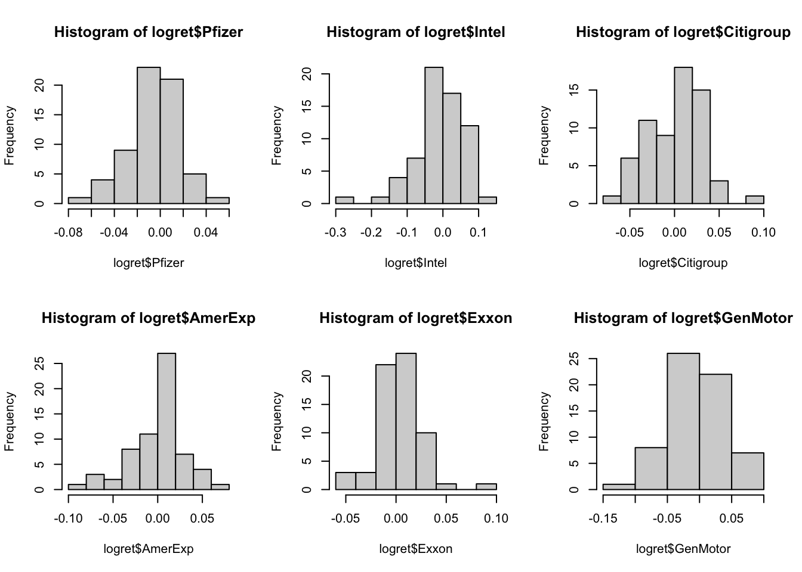
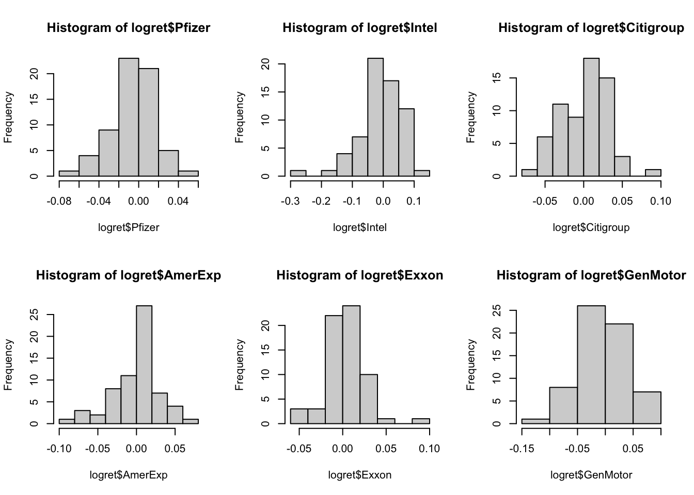
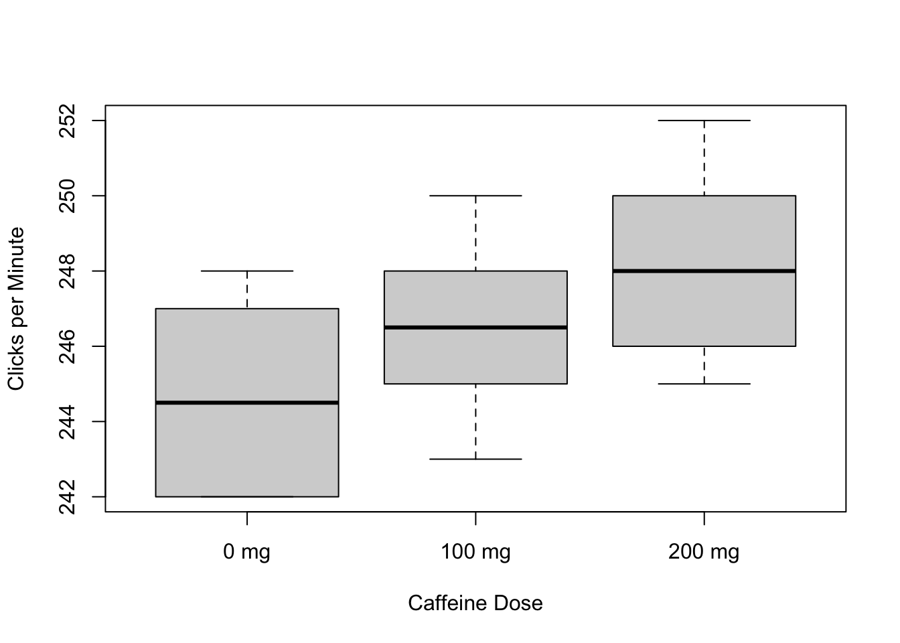

logret <- na.omit(
read.table("data/d_logret_6stocks.txt", sep = "\t", header = TRUE)
)
par(mfrow = c(2, 3))
hist(logret$Pfizer)
hist(logret$Intel)
hist(logret$Citigroup)
hist(logret$AmerExp)
hist(logret$Exxon)
hist(logret$GenMotor)
Use the d_logret_6stocks.txt data set to answer the following questions.
logret <- na.omit(
read.table("data/d_logret_6stocks.txt", sep = "\t", header = TRUE)
)
par(mfrow = c(2, 3))
hist(logret$Pfizer)
hist(logret$Intel)
hist(logret$Citigroup)
hist(logret$AmerExp)
hist(logret$Exxon)
hist(logret$GenMotor)
Use the R script to regress the log return of Pfizer on the log returns of Exxon and Citigroup (with the intercept). Write out the fitted model explicitly.
lm_pfizer <- lm(Pfizer ~ Exxon + Citigroup, data = logret)
lm_pfizer
Call:
lm(formula = Pfizer ~ Exxon + Citigroup, data = logret)
Coefficients:
(Intercept) Exxon Citigroup
-0.005257 0.287636 0.185977 comment
Use the R script to generate an ANOVA table for the multiple regression in part (a).
anova_pfizer <- anova(lm_pfizer)
anova_pfizerAnalysis of Variance Table
Response: Pfizer
Df Sum Sq Mean Sq F value Pr(>F)
Exxon 1 0.0041609 0.0041609 9.2462 0.003475 **
Citigroup 1 0.0019516 0.0019516 4.3369 0.041496 *
Residuals 61 0.0274506 0.0004500
---
Signif. codes: 0 '***' 0.001 '**' 0.01 '*' 0.05 '.' 0.1 ' ' 1Test whether the coefficient of the log return of Exxon is zero based on the ANOVA table in part (b) at the level of 5%. What is your conclusion?
comment
A researcher is interested in comparing the means of the log returns of Pfizer, Exxon, and Citigroup. Suppose the log returns are mutually independent. Use the R script to generate an ANOVA table of the log returns of Pfizer, Exxon, and Citigroup.
Test whether there are significant differences in log returns among the three groups at the level of 5%. What is your conclusion?
Use the R script to test if the proportion of positive log return of Citigroup is 0.5 at the level of 5%. What is your conclusion?
The effect of caffeine levels on performing a simple finger tapping task was investigated in a double blind study. Thirty male college students were trained in finger tapping and randomly assigned to receive three different doses of caffeine (0, 100, or 200 mg) with 10 students per dose group. Two hours following the caffeine treatment, students were asked to finger tap and the numbers of taps per minute were counted. The data are tabulated below:
\[ \begin{array}{} \hline \text{Caffeine Dose} & \text{Finger Taps Per Minute} \\ \hline \text{0 mg} & \begin{array}{} 242 & 245 & 244 & 248 & 247 & 248 & 242 & 244 & 246 & 242 \end{array} \\ \text{100 mg} & \begin{array}{} 248 & 246 & 245 & 247 & 248 & 250 & 247 & 246 & 243 & 244 \end{array} \\ \text{200 mg} & \begin{array}{} 246 & 248 & 250 & 252 & 248 & 250 & 246 & 248 & 245 & 250 \end{array} \\ \hline \end{array} \]
Use the R script to make side-by-side boxplots for the three groups. Do these plots indicate any obvious differences between the groups?
caffeine_group0 <- c(242, 245, 244, 248, 247, 248, 242, 244, 246, 242)
caffiene_group1 <- c(248, 246, 245, 247, 248, 250, 247, 246, 243, 244)
caffeine_group2 <- c(246, 248, 250, 252, 248, 250, 246, 248, 245, 250)
boxplot(
caffeine_group0,
caffiene_group1,
caffeine_group2,
xlab = "Caffeine Dose",
ylab = "Clicks per Minute",
names = c("0 mg", "100 mg", "200 mg")
)
comment
Use the R script to construct an ANOVA table and test whether there are significant differences in finger tapping between the students treated with different doses of caffeine. Use \(\alpha = 0.10\). Interpret your results.
Use the R script to check the normality and constant variance assumptions by making residual plots.
Use the R script to check the normality and constant variance assumptions by implementing Shapiro-Wilk test and Bartlett's test.
Use the R script to compare finger tap rates of the 100 mg and 200 mg caffeine groups with the control group using Bonferroni's method with α = 0.10. Interpret the results.
The following data set from a study by the well-known chemist and Nobel Laureate Linus Pauling (1901-1994) gives the incidence of cold among 279 French skiers who were randomized to the Vitamin C and Placebo groups.
\[ \begin{array}{} \hline \text{Group} & \begin{array}{} \text{Cold} \\ \hline \begin{array}{} \text{Yes} & \text{No} \end{array} \end{array} & \text{Total} \\ \hline \text{Vitamin C} & \begin{array}{} 17 & 122 \end{array} & 139 \\ \text{Placebo} & \begin{array}{} 31 & 109 \end{array} & 140 \\ \hline \end{array} \]
Is there a significant difference in the incidence rates for cold between the Vitamin C and Placebo groups at \(\alpha = 0.05\)? What do you conclude about the effectiveness of Vitamin C in preventing cold?
Consider the following income vs. job satisfaction survey data.
\[ \begin{array}{} \text{Individuals Cross-Classified by Income and Job Satisfaction} \\ \hline \begin{array}{} \text{Income (USD)} & \begin{array}{} \text{Job Satisfaction} \\ \hline \begin{array}{} \text{Very Dissatisfied} & \text{Little Dissatisfied} & \text{Moderately Satisfied} & \text{Very Satisfied} \end{array} \end{array} \\ \hline < 6000 \\ 6000-15,000 \\ 15,000 - 25,000 \\ > 25,000 \end{array} \\ \hline \end{array} \]